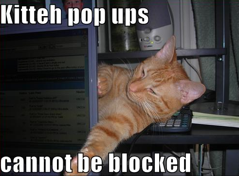

<!DOCTYPE html>

<meta charset="utf-8">
<title>New features in Maps and Semantic Maps</title>

<!-- Your Slides -->
<!-- One section is one slide -->

<section>
    <h2 style="font-size:60px;">Structured data in MediaWiki</h2>
    <br /><br />
    <h6 align="center">bit.ly/maps-2012</h6>
</section>

<section>
    
</section>


<section>
    <h3>Special:Links</h3>
    <ul style="margin-left:142px">
        <li><a href="https://github.com/JeroenDeDauw/slides/">These slides on GitHub (source)</a><br />&#160;</li>
        <li>
            <a href="http://jeroendedauw.github.com/slides/wcn/2012/">These slides on GitHub (pages)</a>
            <br />
            &#160;&#160;-&#160;bit.ly/maps-2012<br />&#160;
        </li>
        <li><a href="http://bit.ly/">bit.ly/mediawiki-maps</a><br />&#160;</li>
    </ul>
</section>

<section>
    <h3>Questions</h3>
    
</section>

<section>
    <h3>Special:Attribution</h3>
    <ul class="attribution" id="stufftofocus">
        <li><a href="https://github.com/paulrouget/dzslides">Slide engine</a>: WTFPL, Paul Rouget</li>
        <li>Slides: <a href="https://creativecommons.org/licenses/by-sa/3.0/">CC BY-SA 3.0</a>, <a href="https://twitter.com/#!/JeroenDeDauw">Jeroen De Dauw</a></li>
    </ul>
</section>

<div id="progress-bar"></div>

<script src="resources/slides.js"></script>
<link href='http://fonts.googleapis.com/css?family=Oswald' rel='stylesheet'>
<link href='resources/slides.css' rel='stylesheet'>

